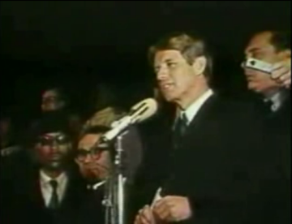

"Following the Assassination of MLK"
Date:
April 4, 1968
Delivered by:
Robert F Kennedy
Location:
Indianapolis, Indiana
Delivered by Bobby Kennedy upon hearing of King's death during his 1968 presidential campaign.
Following the Assassination of MLK
by Robert F. Kennedy
I have bad news for you, for all of our fellow citizens, and people who love peace all over the world, and that is that
Martin Luther King was shot and killed tonight.
Martin Luther King dedicated his life to love and to justice for his fellow human beings, and he died because of that
effort.
In this difficult day, in this difficult time for the United States, it is perhaps well to ask what kind of a nation we
are and what direction we want to move in. For those of you who are black--considering the evidence there evidently is
that there were white people who were responsible--you can be filled with bitterness, with hatred, and a desire for
revenge. We can move in that direction as a country, in great polarization--black people amongst black, white people
amongst white, filled with hatred toward one another.
Or we can make an effort, as Martin Luther King did, to understand and to comprehend, and to replace that violence, that
stain of bloodshed that has spread across our land, with an effort to understand with compassion and love.
For those of you who are black and are tempted to be filled with hatred and distrust at the injustice of such an act,
against all white people, I can only say that I feel in my own heart the same kind of feeling. I had a member of my
family killed, but he was killed by a white man. But we have to make an effort in the United States, we have to make an
effort to understand, to go beyond these rather difficult times.
My favorite poet was Aeschylus. He wrote: “In our sleep, pain which cannot forget falls drop by drop upon the heart
until, in our own despair, against our will, comes wisdom through the awful grace of God.”
What we need in the United States is not division; what we need in the United States is not hatred; what we need in the
United States is not violence or lawlessness; but love and wisdom, and compassion toward one another, and a feeling of
justice toward those who still suffer within our country, whether they be white or they be black.
So I shall ask you tonight to return home, to say a prayer for the family of Martin Luther King, that's true, but more
importantly to say a prayer for our own country, which all of us love--a prayer for understanding and that compassion of
which I spoke.
We can do well in this country. We will have difficult times; we've had difficult times in the past; we will have
difficult times in the future. It is not the end of violence; it is not the end of lawlessness; it is not the end of
disorder.
But the vast majority of white people and the vast majority of black people in this country want to live together,
want to improve the quality of our life, and want justice for all human beings who abide in our land.
Let us dedicate ourselves to what the Greeks wrote so many years ago: to tame the savageness of man and make gentle the
life of this world.
Let us dedicate ourselves to that, and say a prayer for our country and for our people.